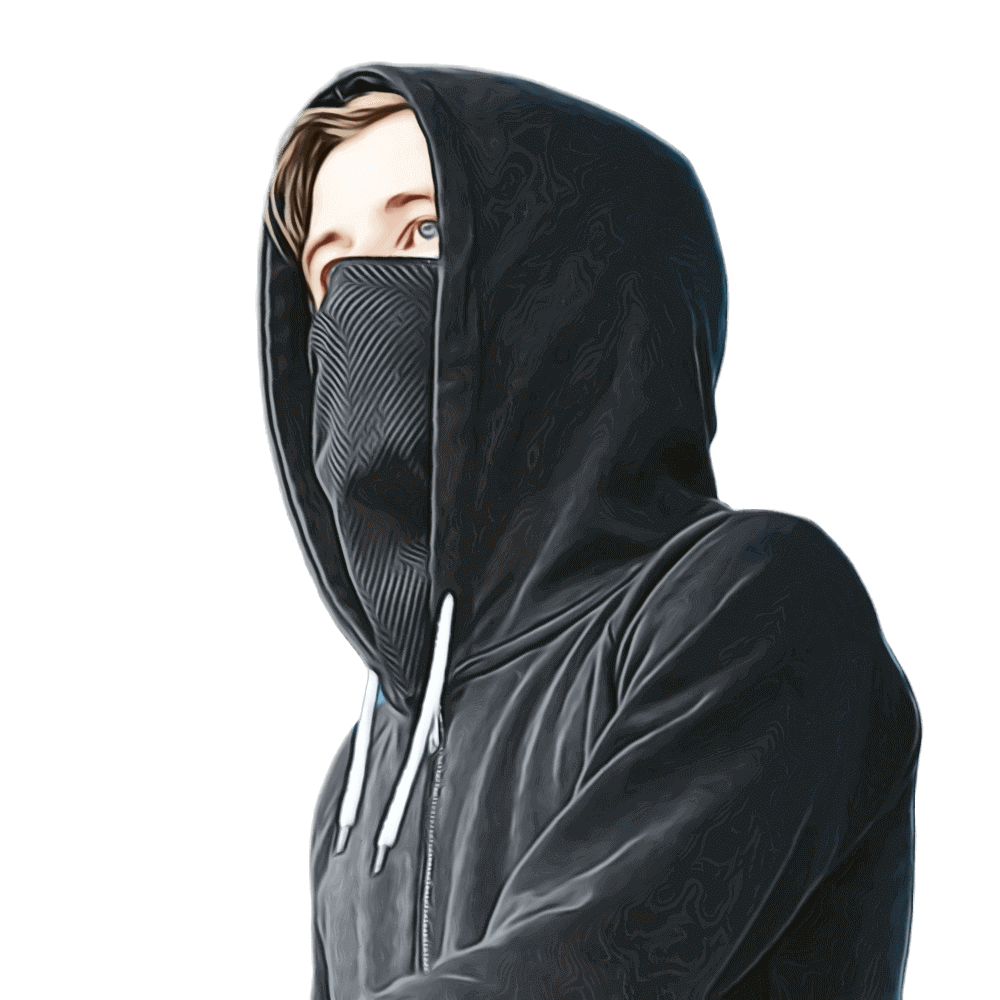

Alan Walker
Alan Olav Walker es un DJ, remezclador y productor discográfico de origen noruego-británico. Es conocido por su sencillo «Faded» que fue certificado platino en 14 países, además, 3 de sus canciones, Faded, Alone, y The Spectre, han alcanzado más de mil millones de visualizaciones en YouTube.
También ha lanzado varias canciones reconocidas, incluyendo Spectre y Force (2015) Sing Me To Sleep (2016) All Falls Down con Noah Cyrus y Digital Farm Animals , Darkside (2018) , Diamond Heart (2018) , On My Way con Sabrina Carpenter y Farruko (2019), Alone, Pt. II con Ava Max (2019), y «Play» con K-391, Martin Tungevaag & Mangoo (2019) Unity en colaboración con sus fans (The Walkers)
Biografía
En 2012, Walker estaba escuchando una canción del DJ italiano David Whistle (también conocido como DJ Ness) y se acercó a él para averiguar cómo producía su música. Se inspiró en los productores de EDM K-391 y Ahrix, y en compositores de cine como Hans Zimmer y Steve Jablonsky.Comenzó a producir su música en su computadora portátil usando FL Studio . En julio de 2012, con la ayuda y los comentarios de sus fanáticos en línea, comenzó a seguir su carrera de productor musical y poco a poco comenzó a publicar su música en YouTube y SoundCloud. Comenzando como productor de dormitorio, fue mejor conocido como DJ Walkzz antes de firmar un contrato discográfico y lanzar su sencillo debut en 2014.
Trayectoria
En 2012, Walker estaba escuchando una canción del DJ italiano David Whistle (también conocido como DJ Ness) y se acercó a él para averiguar cómo producía su música. Se inspiró en los productores de EDM K-391 y Ahrix, y en compositores de cine como Hans Zimmer y Steve Jablonsky.Comenzó a producir su música en su computadora portátil usando FL Studio . En julio de 2012, con la ayuda y los comentarios de sus fanáticos en línea, comenzó a seguir su carrera de productor musical y poco a poco comenzó a publicar su música en YouTube y SoundCloud. Comenzando como productor de dormitorio, fue mejor conocido como DJ Walkzz antes de firmar un contrato discográfico y lanzar su sencillo debut en 2014.
En 2015 alcanzó fama internacional con "Faded". Desde entonces ha realizado giras por todo el mundo y colaborado con diversos artistas, convirtiéndose en uno de los DJs más reconocidos de la música electrónica.
Habilidades
- Producción musical
- Composición
- DJ
- Manejo de FL Studio
